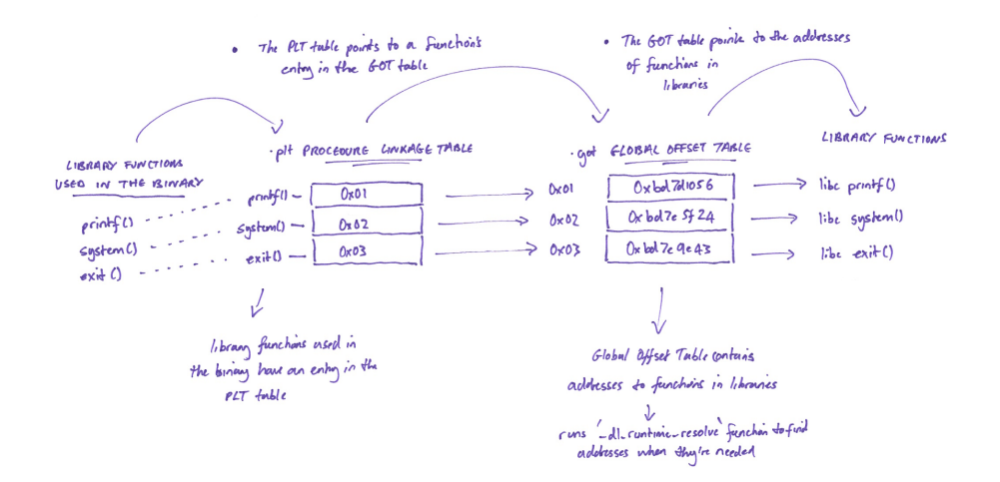
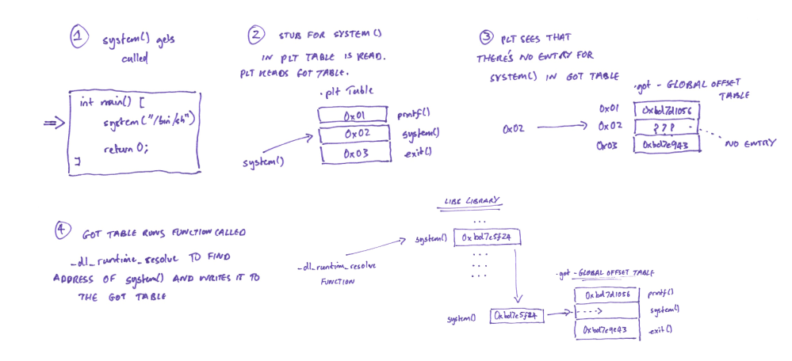

# Linux - ELF - Dynamic Linking - PLT and GOT
https://systemoverlord.com/2017/03/19/got-and-plt-for-pwning.htmlhttps://blog.techorganic.com/2016/03/18/64-bit-linux-stack-smashing-tutorial-part-3/https://www.youtube.com/watch?v=kUk5pw4w0h4Dynamic linking is where the required libraries for external functions you're using - like
printf() from
libc - get loaded into memory when the binary is run (at runtime).
The memory address of the loaded library -
libc - can be different every time.
This is due to things like:
• ASLR (which randomises the memory address of where your binary is loaded each time)
• OS differences
• library version differences
• etc.
Therefore, because the address of the loaded library -
libc - can change every time,
your binary needs a way to to find the location of where the library is loaded in memory and the memory address of the function it wants - like
printf().
This is where the PLT and the GOT come in.
## PLT and GOT
PLT - Process Linkage TableThe PLT has an entry for each library function in your binary.
Each entry contains a stub, which points that functions location in the GOT table
GOT - Global Offset Table The GOT stores the memory addresses of the external library functions you're using.
PLT Table GOT Table
<func> <stub> <stub> <func memory address>
puts() - 0x04 -------------> 0x04 - 0x385966298248 (memory address of puts())
printf() - 0x06 -------------> 0x06 - 0x152980360123 (memory address of printf())
•
Library Functions - These are the functions used in your code that are from libraries
•
PLT Table - The PLT table points to a function's entry in the GOT table
•
GOT Table - The GOT table contains the addresses to functions in libraries
## Compile Time
At compile time, all external library functions that are to be dynamically linked are noted down as
relocation types (R_386_32, for example).
You can see the relocations in your binary using
readelf --relocs <binary>The linker will then set up a series of memory sections for the relocations it needs to perform at runtime:
.got,
.plt,
.got.plt and
.plt.got## Runtime - How Library Function Addresses Are Resolved
Upon compilation, the GOT table will be empty:
PLT Table GOT Table
<func> <stub> <stub> <func memory address>
puts() - 0x04 -------------> 0x04 - NULL
printf() - 0x06 -------------> 0x06 - NULL
At runtime, when your binary needs to run a linked/library function, it queries the PLT table entry for that function.
◇ The PLT table entry contains a stub which points that function's entry in the
Global Offset Table ◇ The PLT then reads the GOT table sees that the GOT doesn't have an address for that function
Because the GOT table doesn't contain an address for that function, it looks it up.
◇ The GOT table runs a function called
_dl_runtime_resolve which is part of
ld.so - Linux's dynamic linker/loader.
◇ The
_dl_runtime_resolve function will find the address of the function you're calling - e.g. find the address of
printf() in
libc - and writes that address to the
GOT - Global Offset TableNow, whenever that function is called again - e.g. printf() - the PLT table will use its stub to read the function's address from the GOT table and jump straight to that function - e.g. jump straight to printf() in libc.